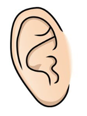
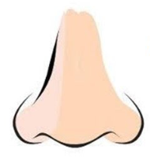

Tacto
Sentido del tacto: es la percepción de la presión, generalmente en la piel.
Vista
Sentido de la vista o de la visión: es la capacidad de detectar las ondas electromagnéticas dentro de la luz visible por el ojo e interpretar por el cerebro la imagen como vista. Existe desacuerdo de si constituye uno, dos o tres sentidos distintos, dado que diversos receptores son responsables de la percepción del color (frecuencia de la luz) y el brillo (energía de la luz). Algunos discuten que la percepción de la profundidad también constituye un sentido, pero se conoce que esto es realmente una función post-sensorial cognitiva derivada de tener visión.
Oido
Sentido del oído o de la audición: es el sentido de la percepción de vibraciones del medio que oscilen entre 20 y 20000 Hz. El sonido se puede también detectar como vibraciones conducidas a través del cuerpo por el tacto. Las frecuencias que están fuera del campo citado, más bajas y más altas, solamente se detectan de esta manera.
Gusto

Sentido del gusto o de sabor: es uno de los dos sentidos químicos del cuerpo. Es bien sabido que existen por lo menos cuatro tipos de gustos o receptores en la lengua y, por lo tanto, como es de esperar, son los anatomistas quienes discuten si estos constituyen cuatro o más sentidos, dado que cada receptor transporta la información a una región ligeramente diferente del cerebro. Los cuatro receptores bien conocidos detectaron el dulce, el salado, el amargo y el ácido, aunque los receptores para dulce y amargo no se han identificado definitivamente. Un quinto receptor para una sensación llamada umami se describió por primera vez en 1908 y su existencia se confirmó en el año 2000. El receptor del umami detecta el aminoácido glutamato, un sabor encontrado comúnmente en la carne, y en condimentaciones artificiales tales como glutamato monosódico.
Olfato
Sentido del olfato o del olor: es el otro sentido químico. Es diferente al del gusto, hay centenares de receptores olfativos, cada uno se une a una molécula de características en particular, según la teoría actual. En el cerebro, el olfato es procesado por el sistema olfativo. Las neuronas olfativas del receptor en la nariz se diferencian de la mayoría de las otras neuronas que mueren y regeneran sobre una base regular. Hay que destacar que en organismos acuáticos no hay diferencia importante entre el olor y el gusto. Richard Axel y Linda Buck obtuvieron el Premio Nobel de Fisiología y Medicina 2004 por su trabajo sobre el olfato, publicado primero en un artículo en 1991 que describió la gran familia de cerca de mil genes que codifican los receptores del olor y cómo los receptores se relacionan con el cerebro.